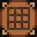

Wiki
Welcome to the wiki. This place will cover many different items present within the server.
All items will have their uses explained*, as well as how to obtain it and the stats for the tools.
To begin browsing the wiki, select a tab from the crafting table.
Do note, however, that only common items are present at first. To unlock more items in the wiki, someone else must have obtained it.
(It will (probably) update manually, so dm Realiste if you obtain a new item)